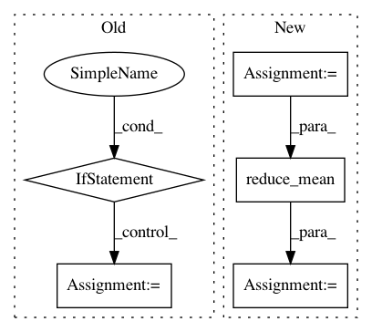

98fe0142e39af4a9a2450ca3f3e48a53152f5091,tensorforce/updater/deep_q_network.py,DeepQNetwork,create_training_operations,#DeepQNetwork#,152
Before Change
// we calculate the loss as the mean squared error between actual observed rewards and expected rewards
loss = tf.reduce_mean(tf.square(self.q_targets - q_values_actions_taken), name="loss")
if self.gradient_clipping is not None:
grads_and_vars = self.optimizer.compute_gradients(loss)
for idx, (grad, var) in enumerate(grads_and_vars):
if grad is not None:
grads_and_vars[idx] = (tf.clip_by_norm(grad, self.gradient_clipping), var)
self.optimize_op = self.optimizer.apply_gradients(grads_and_vars)
self.optimize_op = self.optimizer.minimize(loss)
// Update target network with update weight tau
with tf.name_scope("update_target"):
After Change
// if gradient clipping is used, calculate the huber loss
if self.config.clip_gradients:
huber_loss = tf.select(tf.abs(delta) < 1.0, 0.5 * tf.square(delta), tf.abs(delta) - 0.5)
self.loss = tf.reduce_mean(huber_loss, name="loss")
else:
self.loss = tf.reduce_mean(tf.square(delta), name="loss")
self.optimize_op = self.optimizer.minimize(loss)
In pattern: SUPERPATTERN
Frequency: 4
Non-data size: 5
Instances
Project Name: reinforceio/tensorforce
Commit Name: 98fe0142e39af4a9a2450ca3f3e48a53152f5091
Time: 2016-12-29
Author: k@ifricke.com
File Name: tensorforce/updater/deep_q_network.py
Class Name: DeepQNetwork
Method Name: create_training_operations
Project Name: NVIDIA/OpenSeq2Seq
Commit Name: 44ae6129731ee1d225db8a5f1bafea5fd4b9b542
Time: 2019-02-06
Author: boris.ginsburg@gmail.com
File Name: open_seq2seq/parts/transformer/common.py
Class Name: LayerNormalization
Method Name: call
Project Name: asyml/texar
Commit Name: f55217e5fee88bc38e58e62e886f79e561c4d069
Time: 2018-08-14
Author: zhitinghu@gmail.com
File Name: texar/losses/losses_utils.py
Class Name:
Method Name: reduce_batch_time
Project Name: analysiscenter/batchflow
Commit Name: 11090e7cee138b00570d4afc09cb5779a95df131
Time: 2019-09-03
Author: Tsimfer.SA@gazprom-neft.ru
File Name: batchflow/models/tf/layers/core.py
Class Name: BaseDropout
Method Name: __call__